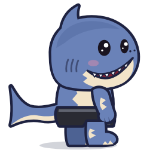

Jeff Companion — projeto de fã, não oficial, sem vínculo com a Marvel.
Quando o ponteiro chega a esta distância do Jeff ou do balão, ele sai do caminho. Os cliques sempre atravessam o Jeff fora do modo de interação.
Perfil separado da aparência: muda o jeito do companion sem mexer no boneco. A expressão corporal acompanha cada fala.
Se você disser na conversa que está chorando ou muito triste, o companion diz para falar com essa pessoa.
Hoje as falas são programadas; estas instruções serão usadas quando um modelo de IA for conectado.
No modo de interação o Jeff para de fugir: faça carinho (passe o mouse sobre ele), dê comida, brinque, arraste ou converse. Esc ou clicar fora encerra.
Com redução de movimento, o companion fica em quadros estáticos e muda de lugar por salto, sem correr pela tela.